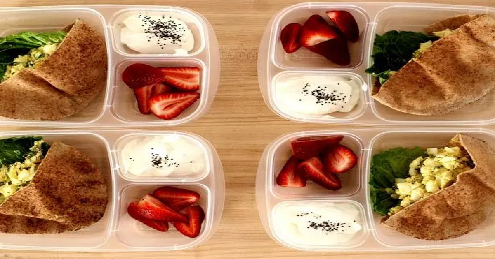

You ever notice how you can eat a huge bowl of pasta and feel hungry again two hours later? Or crush a bag of pretzels and still want something else? That's not a lack of willpower. That's your body screaming for protein. The Protein Intake Calculator can help you figure out how much you actually need.Protein Intake Calculator
Enter your weight, activity level, and goal — get your daily protein target in grams per pound and grams per kilogram.
All data stays in your browser — we never see it.
Macro Split Planner
Enter your calorie target and protein percentage — get a daily macro split with meal-by-meal recommendations.
All data stays in your browser — we never see it.
Meal Protein Tracker
Log your daily meals and see protein per meal — get instant feedback on your distribution.
All data stays in your browser — we never see it.
Protein Source Comparator
Compare cost per gram, leucine content, PDCAAS score, and digestibility across protein sources.
All data stays in your browser — we never see it.